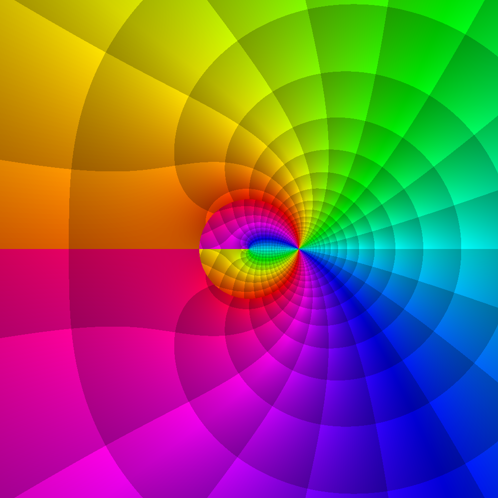
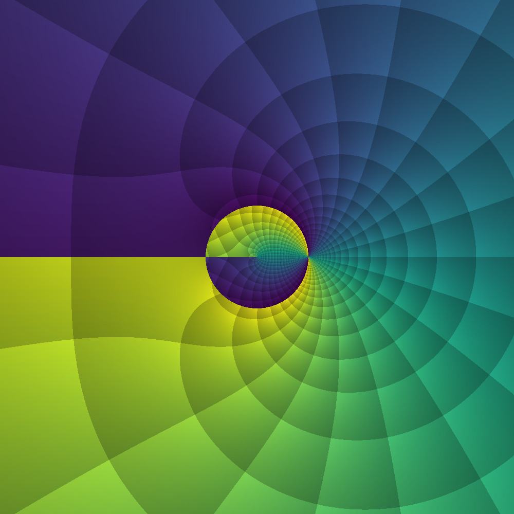
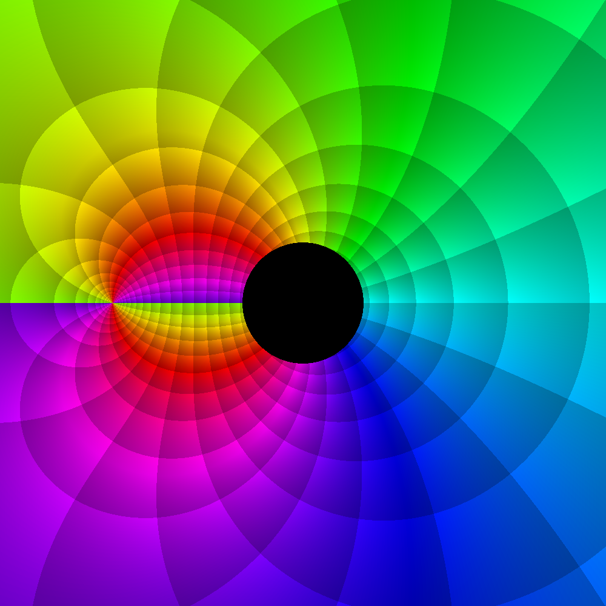
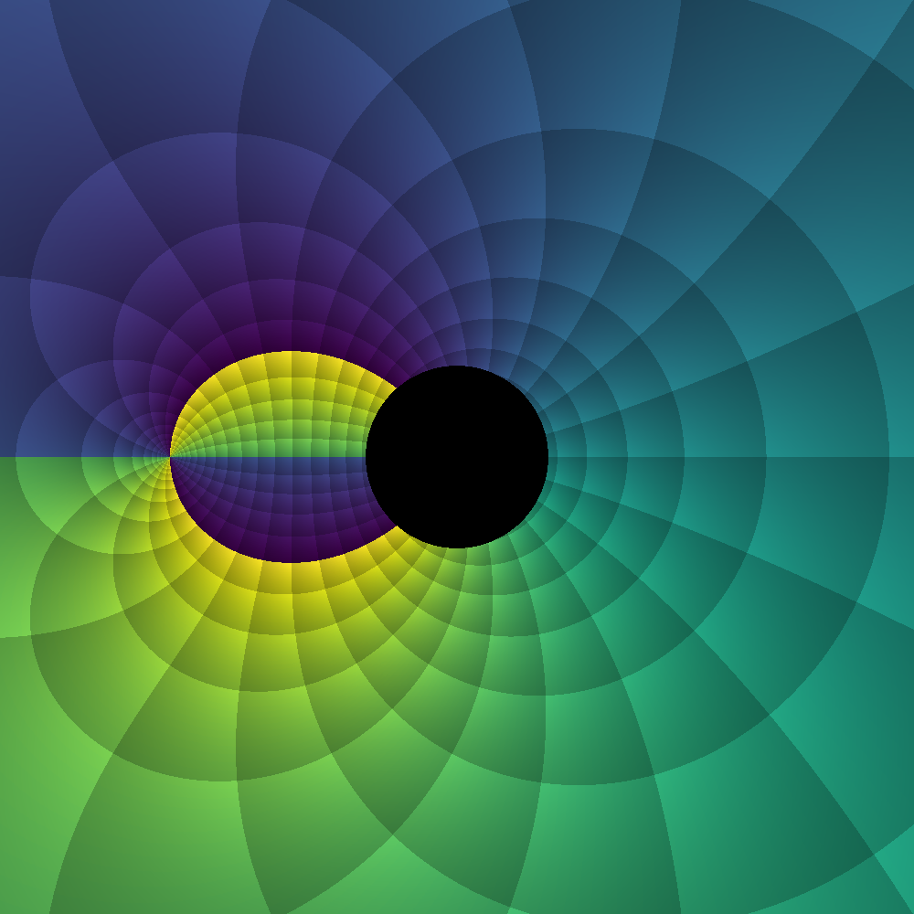
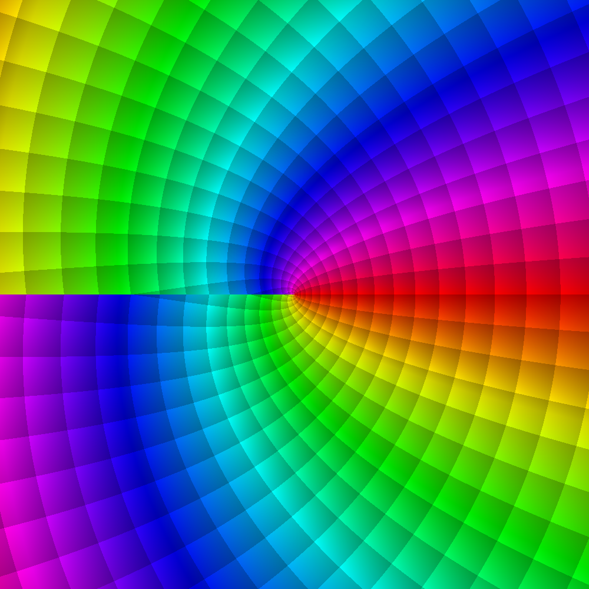
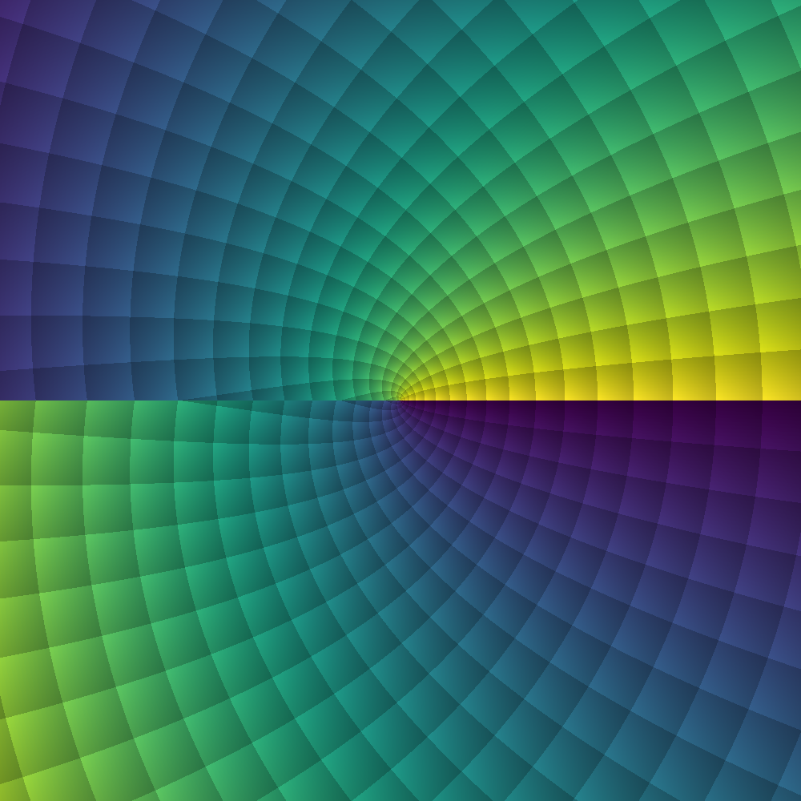
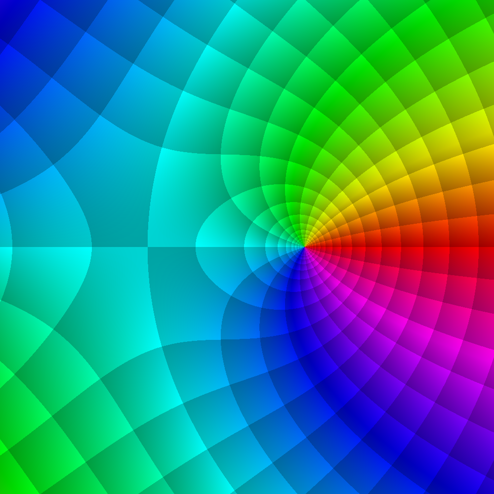
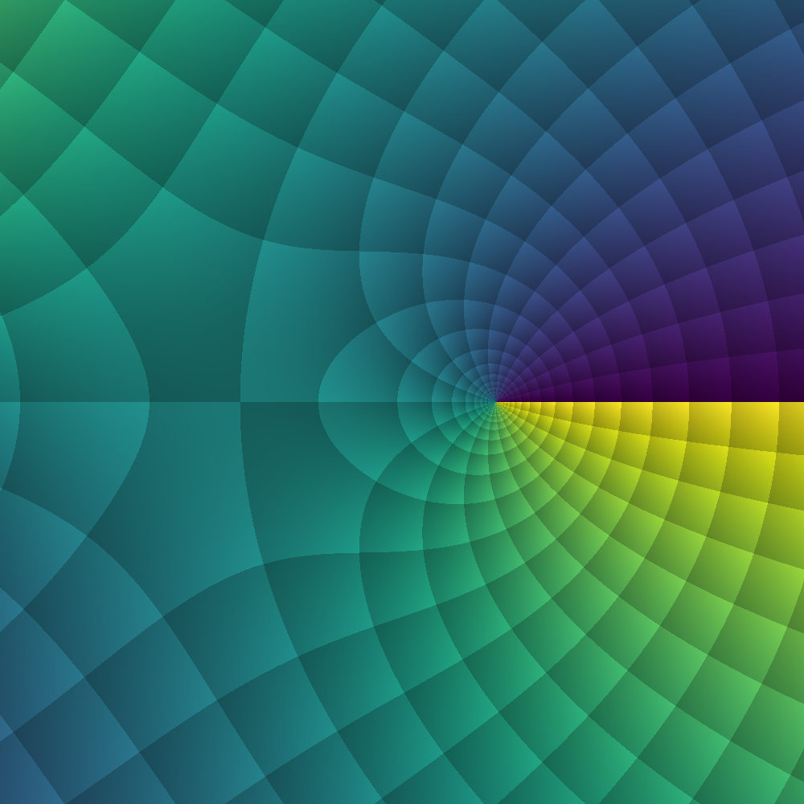

Visual Examples
This page collects some nice looking complex phase portraits of Meijer-G functions (see demos/complexphaseportraits.jl).
To learn more about phase portraits and their usefulness, see ComplexPhasePortrait.jl.
Non-reducible example
Complex phase portrait of non-reducible $G_{3,3}^{2,1}\left( z\;\middle|\; \frac{1}{7},\frac{2}{7},\frac{4}{7} ; \frac{3}{7},\frac{5}{7},\frac{6}{7}\right)$:
 |  |
|---|---|
| NIST Standard | Viridis |
Confluent example
Complex phase portrait of confluent-parameter $G_{4,4}^{2,1}\left( z\;\middle|\; \frac{1}{2},\frac{1}{2},-\frac{1}{4},3 ; 0,\frac{1}{2},5,-\frac{3}{2}\right)$:
 |  |
|---|---|
| NIST Standard | Viridis |
Bessel-related example
Complex phase portrait of Bessel-related $G_{0,2}^{2,0}\left( z\;\middle|\; - ; 0,0\right)$:
 |  |
|---|---|
| NIST Standard | Viridis |
Asymmetric-parameter example
Complex phase portrait of asymmetric-parameter $G_{1,3}^{1,0}\left( z\;\middle|\; \frac{1}{4} ; 0,-2.2,\frac{7}{5}\right)$:
 |  |
|---|---|
| NIST Standard | Viridis |